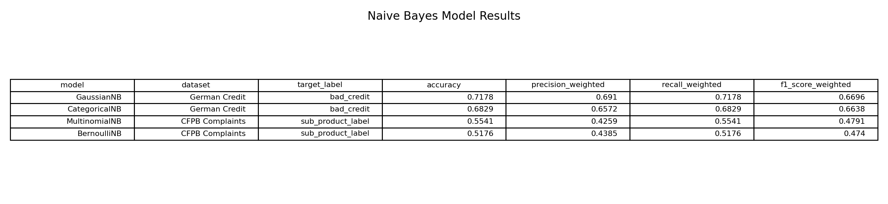

CS 432 Project Journal
Module 7 - Supervised Learning, Naive Bayes
Four flavors of a probability classifier turned loose on borrower records and on what people wrote in their complaints.
The naive idea behind it
Naive Bayes works from a clean little piece of probability. Given what I know about a borrower, how likely is each label, and which one wins. The naive part is the shortcut it takes to get there, since it pretends every feature is independent of the others once you know the class. That is rarely true in lending, where loan amount, duration, and payment obviously move together, yet the assumption simplifies the math enough that the model trains in a blink and often works better than it has any right to. I treated this module as a chance to push that assumption and see where it held and where it cracked.
The other thing I wanted to explore is that Naive Bayes comes in several flavors, each shaped for a different kind of data, so I ran four. Gaussian handles smooth continuous numbers, Categorical handles labelled groups, Multinomial handles counts of things, and Bernoulli handles plain present or absent flags. Lining all four up let me match each one to the kind of data it was built for, and just as usefully, to data it was not.
Matching each flavor to its data
For the two numeric friendly variants I used German Credit. The Gaussian model trained on four continuous fields, age, credit amount, duration, and the monthly burden feature, predicting the lower or higher risk label. The Categorical model took six encoded fields instead, covering sex, job, housing, savings, checking, and loan purpose. Same borrowers, same target, two different views of them.
The count and flag variants called for text, so I turned to the CFPB complaints and tried to predict a mortgage's sub product from the language in the complaint. I built twenty word count features out of the issue, sub issue, company response, and submission method fields across 22,967 records, which fed the Multinomial model directly, while the Bernoulli model saw the same words flattened into simple yes or no presence. Worth flagging up front, the sub products are badly imbalanced, with conventional mortgages making up 13,699 of the records against 4,728 FHA, 2,742 VA, and only 1,798 HELOC. That tilt turned out to shape the results as much as any modeling choice did.
How the four compared
There was a clear split between the borrower models and the text models. The Gaussian model led the pack at about 72 percent accuracy with a weighted F1 near 0.67, and the Categorical model followed at roughly 68 percent. The two CFPB text models lagged well behind, with Multinomial near 55 percent and Bernoulli around 52 percent, both with weaker F1 scores to match.
The gap makes sense once you sit with the two problems. The German models only had to choose between two outcomes using fields that relate fairly directly to credit risk, while the CFPB models were trying to sort complaints into four mortgage types using nothing but scattered word counts, which simply do not carry enough signal to cleanly separate, say, a conventional complaint from an FHA one. Add the heavy imbalance toward conventional and the text models were fighting an uphill battle from the start.

Confident, and still wrong
The confusion matrices were the most instructive part, partly because they exposed problems the accuracy scores politely hid. The Gaussian model looked decent at 72 percent, but underneath it correctly caught only 19 of the higher risk borrowers while missing 68 of them. It was quietly leaning on the larger lower risk group to prop up its accuracy and was actually poor at the one job that matters most in a risk setting. The text models failed more bluntly. The Multinomial model labelled almost everything conventional, getting 3,446 conventional complaints right while scoring zero on HELOC and zero on VA, and the Bernoulli model behaved much the same, defaulting to the majority class because that is the safe bet when the features are thin and the classes are lopsided.
What unsettled me most was watching the probability outputs. The models were frequently confident and still wrong, handing a HELOC complaint to conventional with around 77 percent certainty or backing a misread with 92 percent. That is a genuinely useful warning to carry forward. A model can hand you a high probability and a wrong answer in the same breath, so a confidence number is not the same as being correct, and the shape of the data underneath it can quietly poison everything on top. Naive Bayes was fast and occasionally sharp, but this module mostly taught me to distrust a confident model until I have seen what it gets wrong.